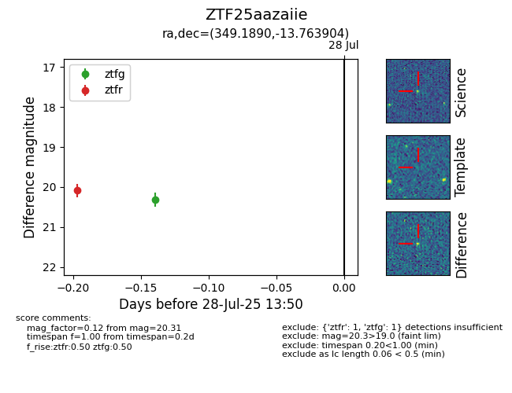

Target ZTF25aazaiie at 2025-07-28 13:50, see:
FINK: fink-portal.org/ZTF25aazaiie
Lasair: lasair-ztf.lsst.ac.uk/objects/ZTF25aazaiie
ALeRCE: alerce.online/object/ZTF25aazaiie
alt names
ZTF25aazaiie (ztf,fink)
coordinates:
equatorial (ra, dec) = (349.1890,-13.76390)
galactic (l, b) = (59.3685,-64.18372)
photometry
last ztfg=20.31, ztfr=20.09
1 ztfg, 1 ztfr detections
